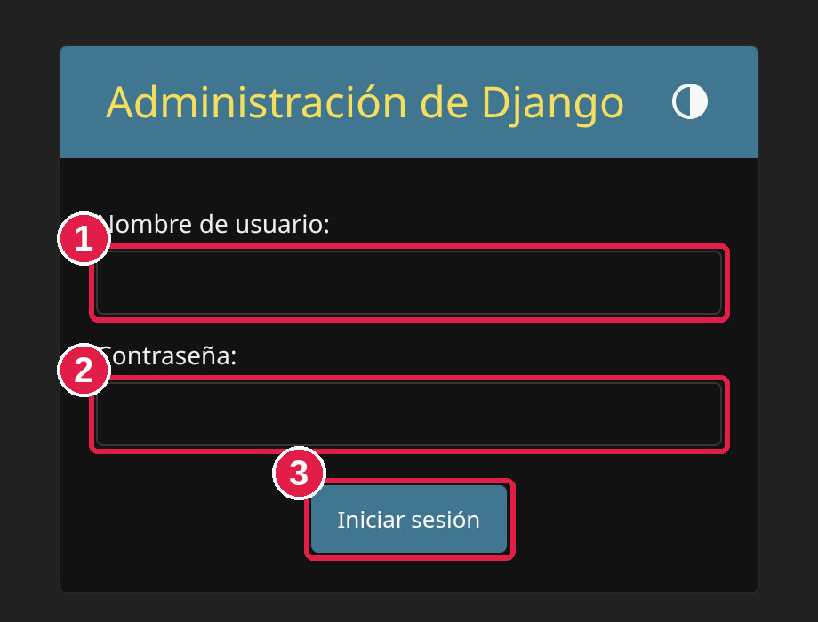
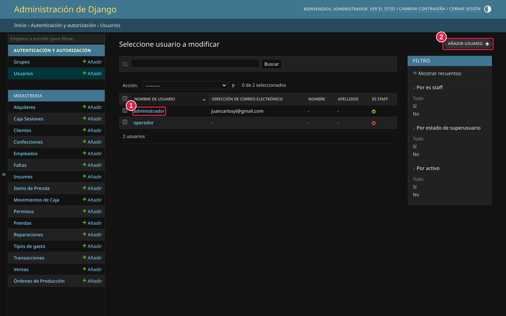
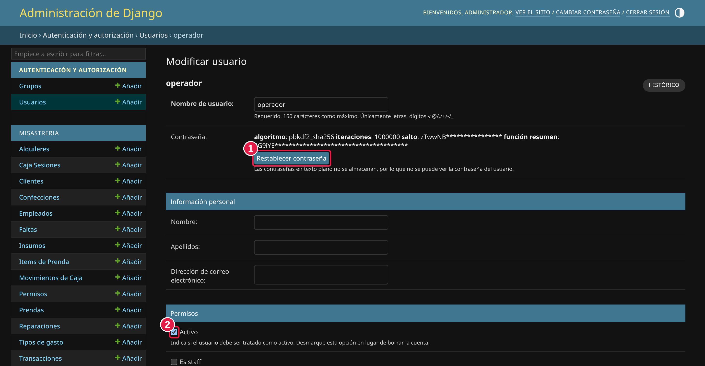
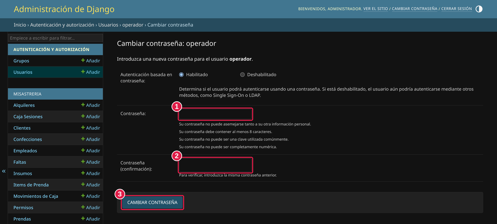
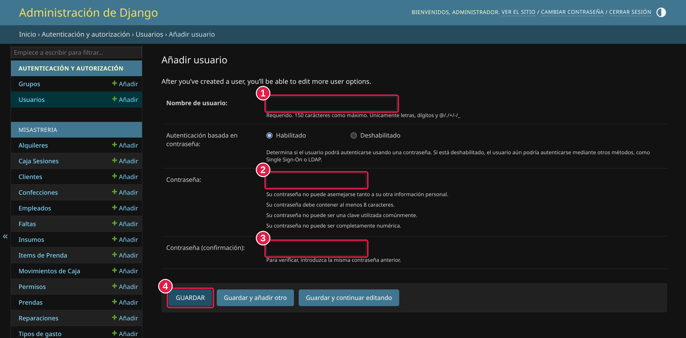

Este manual explica las tareas de administración que no están en el sistema de todos los días, como cambiar la contraseña de una persona o crear un usuario nuevo. También reúne todos los accesos (sistema, hosting, base de datos y sitio web).
En las imágenes, los círculos rojos con números (1, 2, 3…) muestran exactamente dónde hacer clic, en el mismo orden que los pasos.
Ingreso normal al sistema: https://fortiumtailor.com/sistema/login/
| Usuario | Contraseña |
|---|---|
admin | Fortium_1212 |
operador | franklin1212 |
analuzpachecho | secretaria1212 |
| Servicio | Usuario y contraseña |
|---|---|
| Hosting — NameCheap namecheap.com/myaccount/login |
Usuario: franklinchungaraContraseña: Franklin_1212 |
| Base de datos del sistema | Usuario: fortoyye_fortiumdbuserFortium_1212Contraseña: Fortium_1212 |
| Sitio web — WordPress fortiumtailor.com/wp-login.php |
Usuario: franklinContraseña: Franklin_1212 |
El panel de administración sirve para manejar quién puede entrar al sistema y sus contraseñas. Es una dirección aparte de la del uso diario.
| Panel de administración | https://fortiumtailor.com/sistema/admin/ |
| Administrar usuarios | https://fortiumtailor.com/sistema/admin/auth/user/ |
admin.
Los demás usuarios (operador, secretaria) no tienen acceso.
Abrí tu navegador (Chrome, Edge, etc.) y entrá a https://fortiumtailor.com/sistema/admin/. Vas a ver esta pantalla:

admin.admin (ver punto 1).Una vez adentro, en la lista de la izquierda lo único que vas a necesitar está arriba, donde dice Usuarios. Más abajo aparece una lista larga (Clientes, Ventas, Caja, etc.): no hace falta que toques nada de eso, se maneja desde el sistema normal.
Paso 1 — Abrí la lista de usuarios. En la columna de la izquierda hacé clic en Usuarios. Vas a ver a todas las personas con acceso:

Paso 2 — Abrí el cambio de contraseña. Al hacer clic en el nombre se abre la ficha de esa persona. En el recuadro Contraseña, hacé clic en el botón Restablecer contraseña (marcado con el número 1):

Paso 3 — Escribí la contraseña nueva. Se abre esta pantalla:

La contraseña debe cumplir estas reglas (si no, el sistema no la acepta):
12345678).Listo. Avisale a la persona su contraseña nueva.
Paso 1. Entrá a Usuarios (columna izquierda) y hacé clic en AÑADIR USUARIO, arriba a la derecha.
Paso 2. Se abre este formulario. Completá los campos marcados:

Paso 3 (opcional). Después de guardar, el sistema abre la ficha completa de la persona. Ahí podés llenar datos que no son obligatorios y se pueden dejar en blanco:
Si no los llenás, el usuario igual funciona. Si los completás, hacé clic en GUARDAR al final de la página.
En la ficha de una persona (la del punto 3) hay una casilla llamada Activo (marcada con el número 2 en esa imagen):
Cuando un empleado deja de trabajar, lo mejor es desmarcar "Activo" (en vez de borrarlo) y luego bajar hasta el final de la página y apretar GUARDAR. Si vuelve, volvés a marcar "Activo" y queda como antes.
admin debe tenerlas marcadas.
Cuando termines, hacé clic en CERRAR SESIÓN, arriba a la derecha. Es importante, sobre todo si la computadora la usan varias personas.